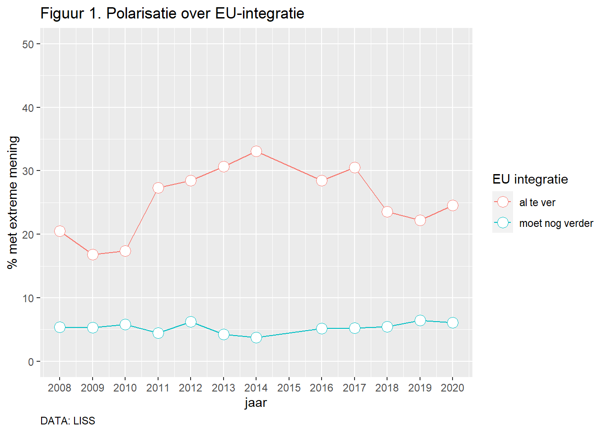
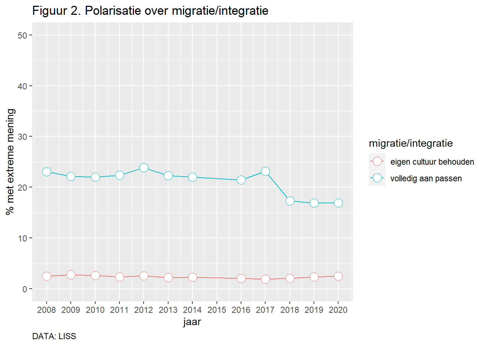
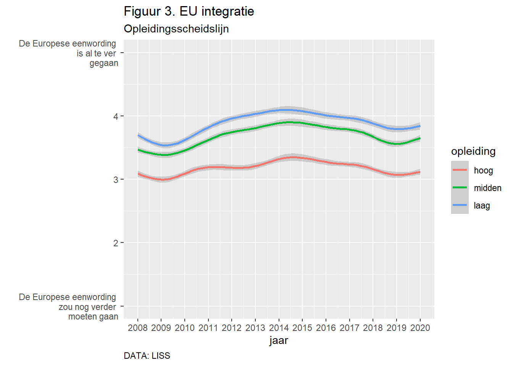
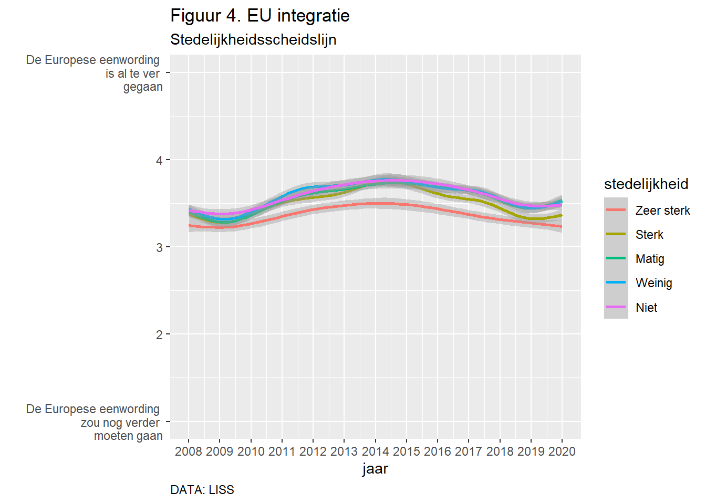
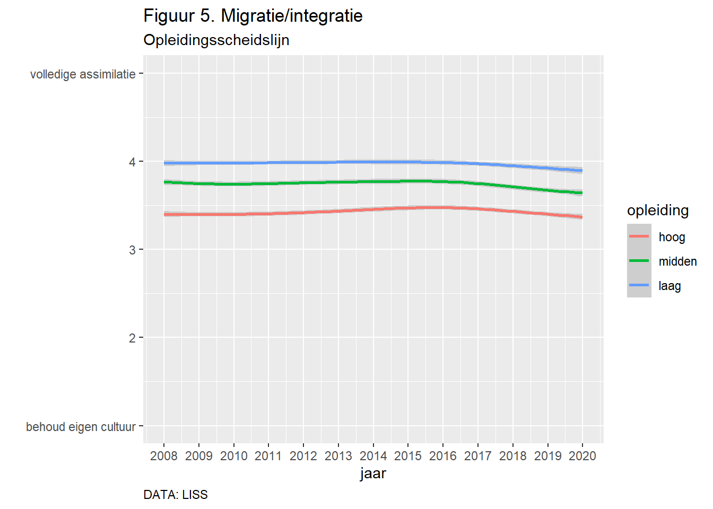
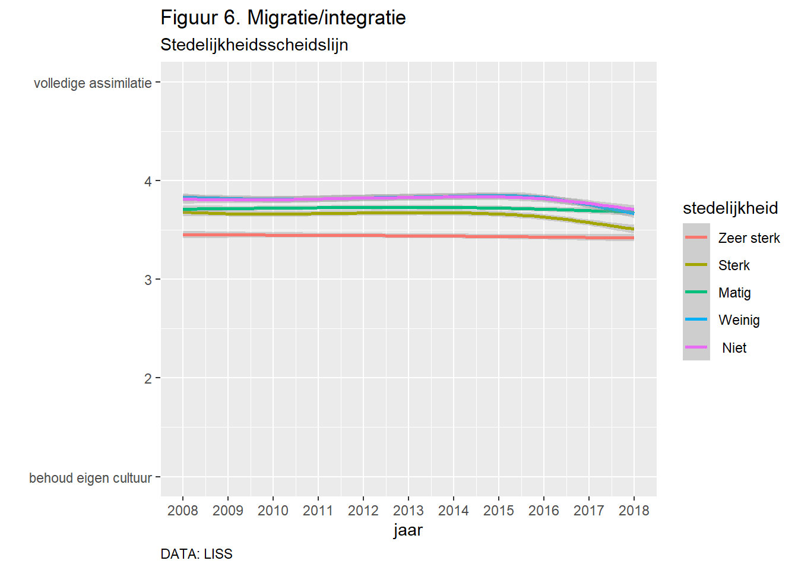
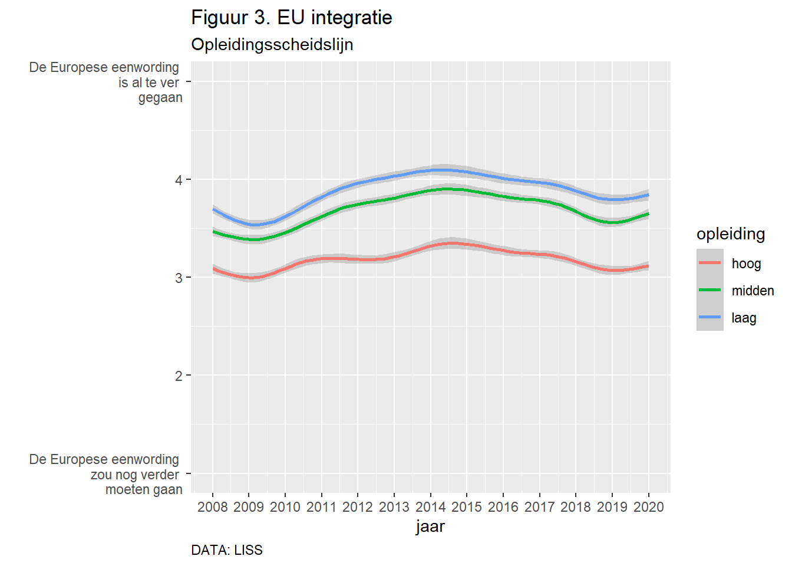
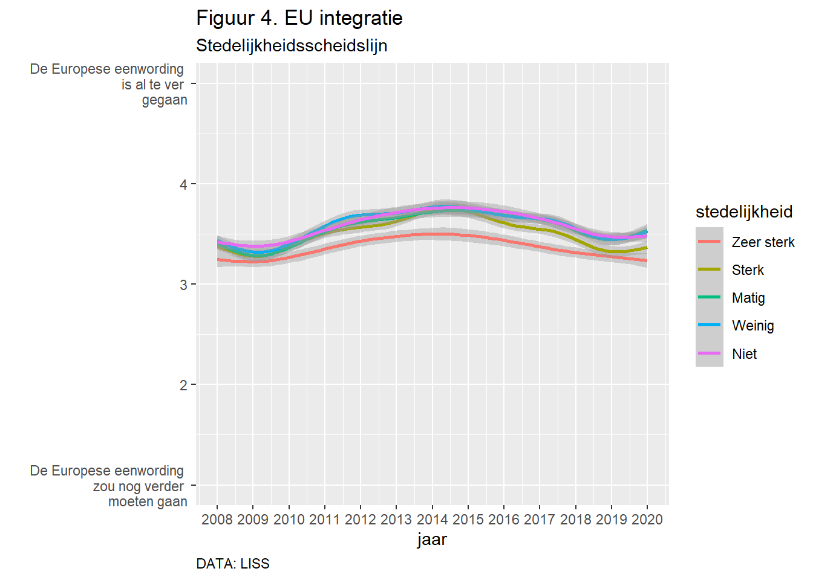
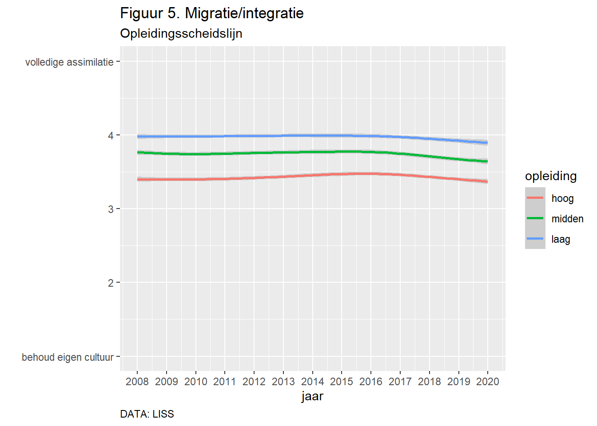
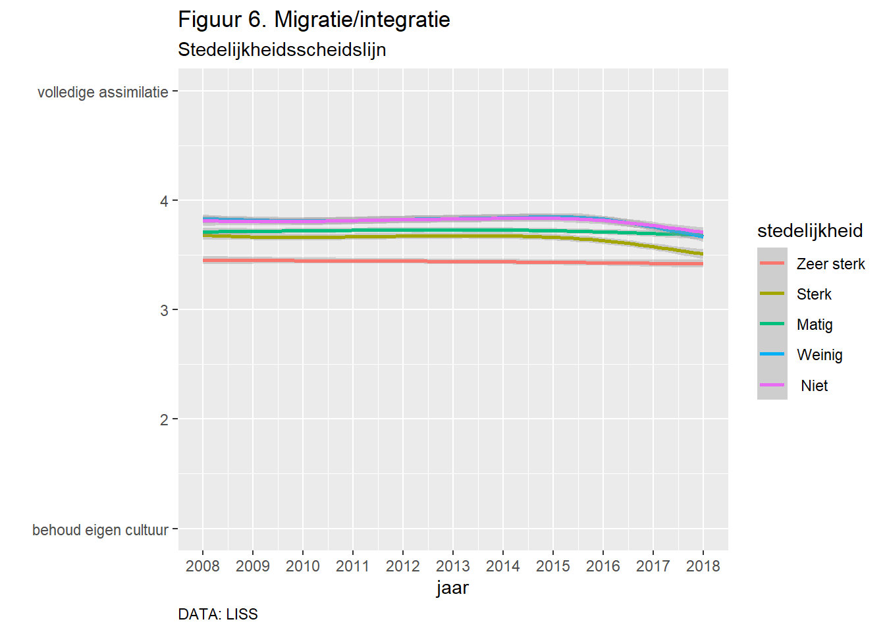

Toenemende polarisatie? Niet in de houdingen van het volk.
De verkiezingsuitslag zou volgens de Volkskrant een groeiende polarisatie tonen tussen nationalisten en kosmopolieten. Het is zeker waar dat zowel de ‘kosmopolitische partij’ D66 en de ‘nationalistische partij’ FvD verkiezingswinst hebben geboekt. Maar dat het een gevolg is van toenemende polarisatie onder de bevolking, dat lijkt ons onwaarschijnlijk. Er is namelijk geen sprake van brede groeiende polarisatie op dit vlak. Polarisatie? Wij zochten met behulp van de LISS-data (we gebruikten data verzameld in de jaren 2008 t/m 2014 en 2016 t/m 2020) uit of de samenleving steeds verder polariseert over politieke thema’s die de kern raken van de tegenstelling nationalisme versus kosmopolitisme: de EU en migratie/integratie. Aan deelnemers aan het LISS-panel worden herhaaldelijk de volgende twee stellingen voorgelegd. Zie Box 1.
Box 1. Meting van houdingen over de EU en migratie/integratie in LISS
EU-integratie
Sommige mensen en partijen vinden dat de Europese eenwording nog verder zou moeten gaan. Anderen vinden dat de Europese eenwording al te ver is gegaan. Waar zou u uzelf plaatsen op een schaal van 1 t/m 5 […]?
- De Europese eenwording zou nog verder moeten gaan
- De Europese eenwording is al te ver gegaan
Migratie/integratie
In Nederland vinden sommigen dat mensen met een migratie-achtergrond hier moeten kunnen leven met behoud van de eigen cultuur. Anderen vinden dat zij zich geheel moeten aanpassen aan de Nederlandse cultuur. Waar zou u uzelf plaatsen op een schaal van 1 t/m 5 […]?
- behoud van eigen cultuur voor mensen met een migratie-achtergrond
- mensen met een migratie achtergrond moeten zich geheel aanpassen
Als er sprake zou van toenemende polarisatie moet een steeds groter deel van de bevolking een (relatief) extreem antwoord geven op deze twee stellingen. Figuren 1 en 2 tonen dat dit niet het geval is. Het aantal mensen dat zeer sterk vindt dat de EU-integratie niet ver genoeg is gegaan schommelt constant tussen de 4 en 6%. Er zijn veel meer Nederlanders die vinden dat de EU-integratie veel te ver is gegaan: tussen de 17 en 33%. We zien daarbij flinke schommelingen, maar van een duidelijke stijgende trend is geen sprake. Sterker nog: in de laatste jaren lijkt de Nederlandse bevolking minder ‘extreem’ te worden op dit vlak.

Iets vergelijkbaars zien we rond de integratie van mensen met een migratie-achtergrond. Een laag stabiel aantal mensen (2%) is het sterk eens met de ‘behoud van eigen cultuur’-extreem. Aan de andere kant van de schaal bevindt zich een aanzienlijk groter deel van de bevolking, maar het aantal neemt niet toe. In tegendeel: de laatste meetjaren zien we juist dat minder mensen vinden dat migranten zich volledig dienen aan te passen.

Sociale scheidslijnen?
Ook al is er geen sprake is van toenemende polarisatie onder de bevolking, kan het nog wel zo zijn dat verschillende groepen in de samenleving uit elkaar groeien. We spreken dan eigenlijk over toenemende sociale scheidslijnen, niet over toenemende polarisatie (maar dat is wellicht academische muggenzifterij). Volgens het Volkskrant artikel zouden twee sociale kenmerken cruciaal zijn:
• opleiding
• stedelijkheid
Laten we eens kijken, want ook deze informatie vinden we in de LISS-data. Voor opleiding nemen we enkel mensen van 25 jaar en ouder mee, omdat ze zeer waarschijnlijk klaar zijn met hun onderwijscarrière. We maakten drie categorieën: Laag: basisonderwijs en vmbo; Midden: havo/vwo en mbo; Hoog: hbo en wo. Stedelijkheid is bepaald op basis van de woonplaats: Zeer sterk stedelijk; Sterk stedelijk; Matig stedelijk; Weinig stedelijk en Niet stedelijk. We tonen in het onderstaande steeds per groep de (geschatte) trendlijn in gemiddelde houding (de standaarddeviatie van deze schatting geven we aan met een schaduw om de lijn).
Kijken we naar de EU-integratie (Figuur 3) dan lijkt de sociale scheidslijn inderdaad een klein beetje toe te nemen: de verschillen tussen de opleidingsgroepen worden wat groter. Echter, de verschillen zijn altijd al groot geweest.
Voor stedelijkheid en EU-integratie zien we meer spaghetti (Figuur 4). Stedelingen staan minder negatief ten aanzien van verdere EU-integratie dan mensen in minder stedelijke gebieden. Echter, van een duidelijke toenemende sociale scheidslijn is geen sprake.


We zien min of meer hetzelfde beeld als we kijken naar integratiehouding (Figuur 5 en 6): Ja, er bestaan verschillen en de hogeropgeleiden en mensen in stedelijke gebieden zijn (iets) minder vaak van mening dat migranten zich volledig dienen aan te passen, maar van duidelijk toenemende sociale scheidslijnen is geen sprake.


Polarisatie is geen easy-fix stopwoord
Ja, in de verkiezing hebben kosmopolitische en nationalistische partijen (D66, VOLT, FvD en JA21) gewonnen. Echter GroenLinks en PVV verloren. Netto is er – in zetels uitgedrukt – slechts sprake van +1 op kosmopolitisme en +6 op nationalisme. Ofwel: meer nationalisme. En zelfs die verschuiving, kunnen we niet koppelen aan een langere trend van veranderende houdingen onder de bevolking.
Kan het dan aan de data liggen? Extreem denkende mensen doen minder mee met vragenlijstonderzoek, maar we hebben geen reden om aan te nemen dat dit het afgelopen decennium is veranderd Wel weten we dat mensen met extreme meningen vaker op sociale media zitten en tv-programma’s en kranten daarvan smullen. Dit maakt het heel intuïtief dat polarisatie toeneemt, maar niet per se correct. Het populaire stopwoord ‘polarisatie’ volgt vaak te snel en te simpel.
Wat verklaart dan wel die nationalistische verschuiving in de kamer? Per verkiezing verschilt het welke houdingen (of thema’s) de stemkeus van mensen bepalen. Als migratie en integratie worden uitgelicht, lijken juist D66 en nationalisten daarvan te profiteren. Bovendien lijkt het meer geaccepteerd dat mensen op extreemrechtse partijen als FvD stemmen. Tenslotte, zou de zetelwinst voor ‘nationalisme’ wel eens vooral winst kunnen zijn voor ‘corona-vrijheid,’ hetgeen waarop Forum zich profileerde. Of dit de verklaringen zijn, moet verder onderzoek uitwijzen. Voor nu kan kosmopolitisme-nationalisme polarisatie weer even in de ijskast.

Copyright © 2021 Jochem Tolsma
Sociale scheidslijnen?
Ook al is er geen sprake is van toenemende polarisatie onder de bevolking, kan het nog wel zo zijn dat verschillende groepen in de samenleving uit elkaar groeien. We spreken dan eigenlijk over toenemende sociale scheidslijnen, niet over toenemende polarisatie (maar dat is wellicht academische muggenzifterij). Volgens het Volkskrant artikel zouden twee sociale kenmerken cruciaal zijn:
• opleiding
• stedelijkheid
Laten we eens kijken, want ook deze informatie vinden we in de LISS-data. Voor opleiding nemen we enkel mensen van 25 jaar en ouder mee, omdat ze zeer waarschijnlijk klaar zijn met hun onderwijscarrière. We maakten drie categorieën: Laag: basisonderwijs en vmbo; Midden: havo/vwo en mbo; Hoog: hbo en wo. Stedelijkheid is bepaald op basis van de woonplaats: Zeer sterk stedelijk; Sterk stedelijk; Matig stedelijk; Weinig stedelijk en Niet stedelijk. We tonen in het onderstaande steeds per groep de (geschatte) trendlijn in gemiddelde houding (de standaarddeviatie van deze schatting geven we aan met een schaduw om de lijn).
Kijken we naar de EU-integratie (Figuur 3) dan lijkt de sociale scheidslijn inderdaad een klein beetje toe te nemen: de verschillen tussen de opleidingsgroepen worden wat groter. Echter, de verschillen zijn altijd al groot geweest.
Voor stedelijkheid en EU-integratie zien we meer spaghetti (Figuur 4). Stedelingen staan minder negatief ten aanzien van verdere EU-integratie dan mensen in minder stedelijke gebieden. Echter, van een duidelijke toenemende sociale scheidslijn is geen sprake.


We zien min of meer hetzelfde beeld als we kijken naar integratiehouding (Figuur 5 en 6): Ja, er bestaan verschillen en de hogeropgeleiden en mensen in stedelijke gebieden zijn (iets) minder vaak van mening dat migranten zich volledig dienen aan te passen, maar van duidelijk toenemende sociale scheidslijnen is geen sprake.

